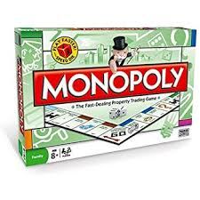

El juego de mesa más vendido de la historia
Antes
Un juego creado con la funcion de servir como herramienta para enseñar las teorias acerca de la justicia social y económia extraidas del estudio titulado Progreso y Miseria de Henry George
Monopoly
Comercializado por vez en el año de 1936.
A lo largo de 80 años, el juego a sufrido una notable evolucion.Sus multiples ediciones y sus tantas versiones han dado pie a que se cambiara desde la caja que lo contiene hasta los elementos que lo componen. Logrando asi, mantenerse como el favorito a través de las décadas.
Ahora
Con los años la finalidad del juego cambio para solo disfrutar un buen rato, negociando propiedades y hasta haciendo uso de medios electrónicos para todas las transacciones que requiere el juego

Con información deGraffica.info.cultura visual